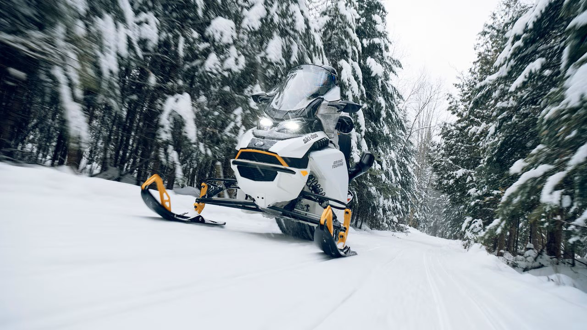
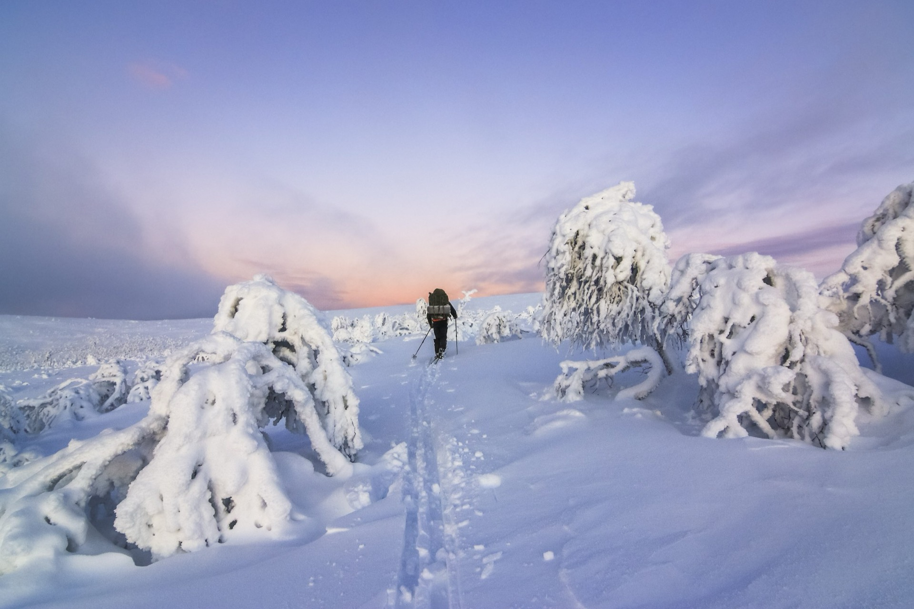
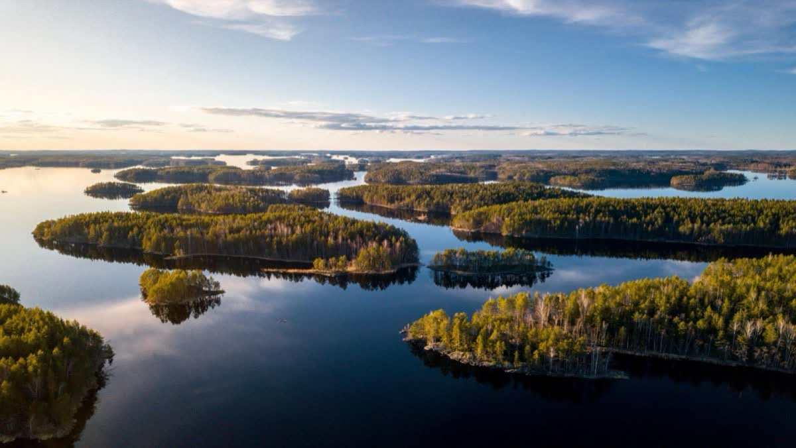

Finland
Where Nature Meets Nordic Excellence
Where Nature Meets Nordic Excellence

The world's happiest country — from the Arctic wilderness of Lapland to the thousand lakes of Saimaa and the design capital Helsinki. Four distinct seasons, each with its own magic.

Europe's largest lake district stretches across central Finland — a mosaic of shimmering water, ancient forest, and emerald islands. A landscape that feels untouched by time.
Luxury lakeside resorts offer cave spas, floating saunas, glass-roofed suites, and gourmet dining over the water. In summer, explore by kayak, paddleboard, and houseboat. In winter, snowshoe across frozen Saimaa beneath an impossibly starlit sky.
Key properties: Järvisydän Resort · Tahko · Sahalahti
Family-owned hidden gems — not on global booking platforms. Best agent commissions in Finland.
Summer peak: June – August | Magical winter: December – March
Finland's capital is a UNESCO Creative City of Design — compact, walkable, and packed with world-class architecture, innovative dining, and a vibrant cultural scene. Built on a peninsula with 300+ islands, Helsinki moves effortlessly between urban sophistication and sea air.
The Senate Square and iconic Helsinki Cathedral anchor a city centre full of design boutiques, covered market halls, and Michelin-starred restaurants. The sea fortress of Suomenlinna, a UNESCO World Heritage Site, is just 15 minutes by ferry.
Helsinki is the natural gateway into Finland — and a destination worth at least two nights in its own right.
Highlights: Design District · Suomenlinna · Market Square · Löyly Sauna · Island archipelago

Finland rewards year-round. Every season transforms the landscape — and the programme.






Finland is more accessible than most clients expect. Helsinki Airport (HEL) connects directly to all major European hubs, with onward domestic connections to every region.
We arrange all airport transfers, meet-and-greet services, domestic connections, and VIP handling across every region.
Your Local Partner in Finland
Finland DMC is a specialist destination management company covering all of Finland — from the Arctic wilderness of Lapland to the thousand lakes of Saimaa and the design capital Helsinki.
We craft seamless, end-to-end travel experiences for international tour operators. Accommodation, dining, activities, transfers — every element brought together into one unforgettable journey.